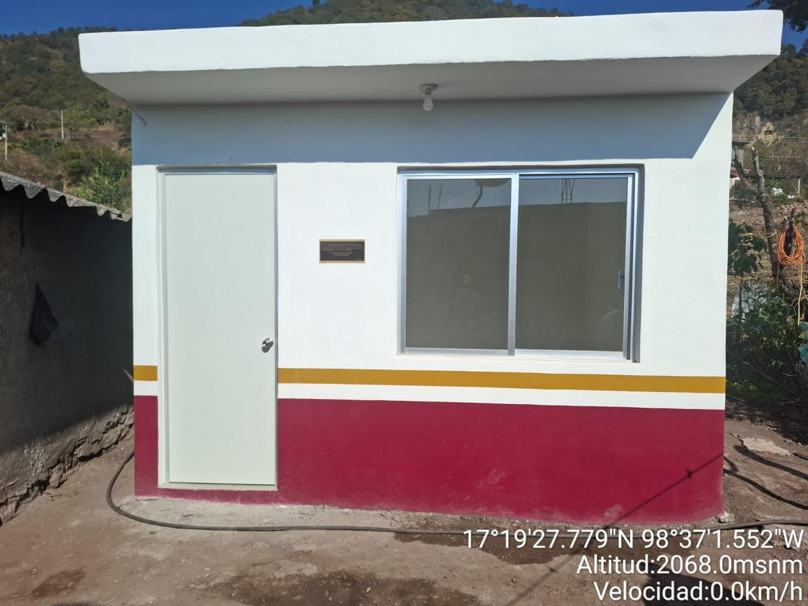
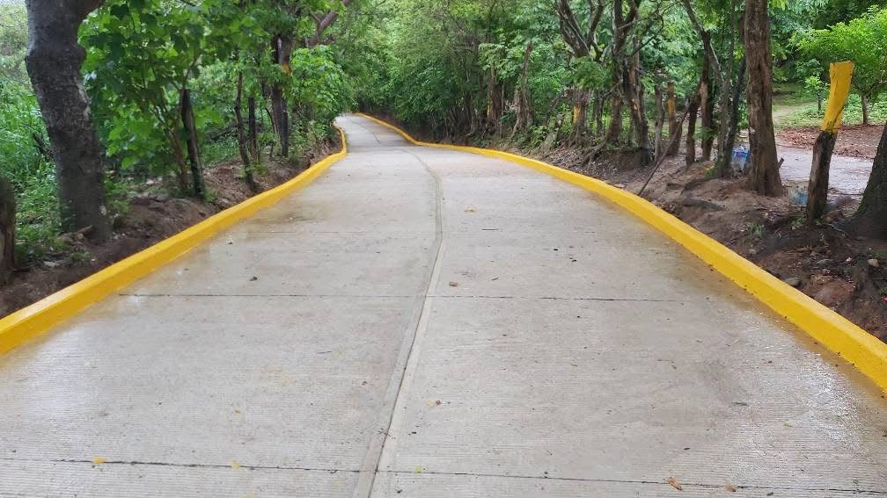
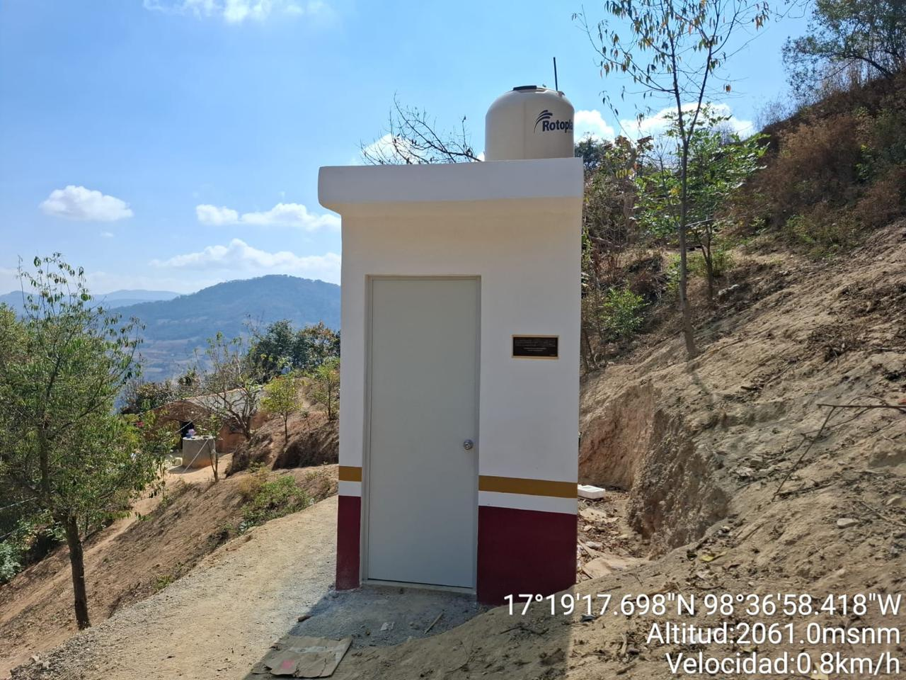

Obra Civil
Edificación - Dormitorios
Estructura y acabados exteriores de dormitorios listas para su operación.

Proyectos
Una selección de nuestros proyectos más recientes.

Estructura y acabados exteriores de dormitorios listas para su operación.

Colado y acabado de losa de concreto para cancha deportiva de básquetbol y explanada escolar.

Preparación y nivelación del terreno, instalación del sistema de drenaje, conformación y compactación de la base, colocación del césped, trazo de las líneas reglamentarias e instalación del equipamiento deportivo, garantizando el cumplimiento de las especificaciones técnicas y de calidad.

Diseño arquitectónico y estructural de un edificio escolar de dos niveles con rampas de acceso.

Supervisión técnica y control de calidad durante el armado y colado de elementos estructurales.

Excavación e introducción de tubería pluvial y sanitaria previas a la pavimentación de la vialidad.

Excavación e introducción de tubería pluvial y sanitaria previas a la pavimentación de la vialidad.

Excavación e introducción de tubería pluvial y sanitaria previas a la pavimentación de la vialidad.

Construcción integral de baño con instalaciones de plomería, losetas y acabados completos.
.jpeg)
Tanque de almacenamiento de agua .
.jpeg)
Introducción de tubería de agua para el suministro a los hogares.
.jpeg)
Proyecto concluido del tanque de almacenamiento de agua